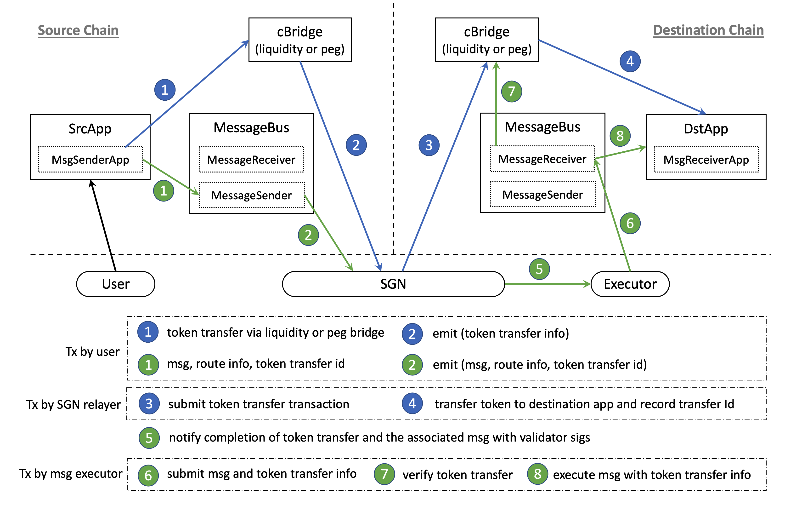

Celer IM Overview

Celer IM fundamentally changes how multi-blockchain dApps are built and used. Instead of deploying multiple isolated copies of smart contracts on different blockchains, developers can now build inter-chain-native dApps with efficient liquidity utilization, coherent application logic, and shared states. Users of Celer IM-enabled dApps will enjoy the benefits of a diverse multi-blockchain ecosystem with the simplicity of a single-transaction UX, without complicated manual interactions across multiple blockchains.
The Celer IM framework is very easy-to-use and allows a “plug’n’play” upgrade that often requires no modifications with already deployed code. As an example, Uniswap and Sushiswap can be transformed into a cross-chain DEX with just a simple plug-in. There have been some projects that implemented this functionality in production such as ChainHop and Rango Exchange.
In the above cross-chain DEX example, a user of Sushiswap can swap their ETH on Arbitrum to BNB on Binance Smart Chain (BSC) with a single, simple transaction. Behind the scenes, the following has happened:
- ETH -> USDT on the Arbitrum-side via Sushiswap
- USDT on Arbitrum is bridged to BSC via cBridge as part of the Celer IM framework
- An inter-chain message to execute a USDT->BNB swap is sent to BSC via Celer IM
- USDT -> BNB swap on BSC-side Sushiswap is triggered by that remote call on Sushiswap.
Inter-chain App Use Cases
The current common practice of making a “multi-blockchain” dApp is done by simply replicating the same code on multiple chains where the liquidity, application logic and states of the same dApp on different chains are completely isolated from each other. In fact, except for the UI and the protocol token, nothing is shared between these instances.
This approach often suffers from low liquidity efficiency, disconnected states, and a degraded user experience. Celer IM allows dApps to tap into the true potential of the multi-blockchain world by enabling a single-click user experience that benefits from much higher liquidity efficiency and coherent application logic.
Some high-level examples:
- DEXes that allow users to swap tokens across multiple chains from just one chain and with only a single transaction (e.g., ChainHop and Rango Exchange).
- NFT Bridge that allows users to send their NFTs across different chains (e.g., cBridge NFT).
- Yield aggregators that allow users to manage multi-blockchain vaults from a single chain
- Lending protocols where collateral can be provided on one chain in order to borrow assets on a different chain
- DAO governance protocols that allow unified governance mechanisms without requiring governance tokens to be moved across different chains
- NFT marketplaces where a user from one chain can place bids on an auction taking place on a completely different chain
- Metaverse games where users can interact seamlessly in the game with virtual items from various chains
- New kinds of cross-chain asset transfer bridges with different liquidity models, validation models, or even privacy features that can be built and co-exist under the same framework. In fact, cBridge can be seen as an asset bridge built on Celer IM.
Let’s walk through some examples in more detail and then we can dive into a more technical flow walkthrough.
Decentralized Exchanges
Today a multi-blockchain DEX has to build liquidity pools for the same key asset pairs on every chain they are deployed on. As a result, a DEX has to spread out the farming incentives across all of these different chains for these pairs. Even though the total liquidity across all of the chains may be fairly high, the liquidity depth of each pool on each individual chain is actually spread thin. Unfortunately, this harms the overall trading experience by creating high slippage. In addition, for users who want to make a trade for a token where deep liquidity exists on a different chain, they have to manually swap on the originating chain, use a separate fund bridge app, and then switch to the other chain to make the final swap.
DEXes built using Celer IM have a significantly improved trader experience by automatically routing their trade to the deep liquidity pool with just a single transaction. With this innovation, a DEX project will be able to concentrate the farming incentives for a pair of tokens on a single pool, creating deeper liquidity with low slippage.
Lending Protocols
Today, if a user provides collateral in a lending protocol on one chain, they can only borrow assets on that same chain. In order to borrow assets from a different chain, they have to withdraw their liquidity, manually move it to a different chain, then provide liquidity in the new chain’s collateral pool.
Celer IM enables a new kind of inter-chain lending where a user is able to seamlessly move their collateral from a liquidity pool on one chain to a pool on a different chain, all in a single transaction. Then, they can directly borrow assets on that new chain. With this functionality, users will have a simple and clean UX that lets them accomplish what they need to without having to leave the lending application!
NFT Marketplaces
Today, if a user wants to participate in an NFT auction, they must have funds on the blockchain where the NFT exists. It excludes people who would normally partake in the auction but don’t have funds on that particular chain. When a marketplace like OpenSea is deployed on a chain like Ethereum, a good chunk of the audiences that are on other chains are excluded due to the complicated bridging operations and high gas costs.
Celer IM can help to expand NFT marketplaces to reach a wider audience. An auction will have the ability to take bids across chains other than where the NFT was initially minted. On top of this, there isn’t a need to make any individual cross-chain fund transfers before the auction results are finalized. This significantly reduces the costs of participating in an NFT auction, decreasing the barriers to entry and enlarging the trader pool for the marketplace as a whole.
Architecture Walkthrough
This section describes the Celer IM architecture, design pattern, and end-to-end protocols
Celer IM Design Patterns
In this section, we introduce the architecture of Celer IM via a step-by-step walkthrough of common application design patterns.
Cross-chain logic execution with accompanying fund transfer
For many inter-chain-native applications, the core flow often involves the process of sending funds to one or more chains and using those bridged funds to do something on the destination chain(s). In fact, the DEX demo given above uses this exact pattern. Links to the demo code will be provided throughout this walkthrough.

While the above flow diagram seems complicated, we want to highlight that most of this flow is handled by Celer IM, and that developers will only need to work with two simple functions in the framework’s application template.
Step 1: User initiates a transaction to dApp
Instead of interfacing directly with the existing dApp smart contracts, a user now interacts (mark A) with a new dApp Plug-in contract to express their intention of cross-chain logic execution. This dApp plug-in becomes part of the overall dApp business logic and may interact with existing smart contracts on the source chain. This is usually the only transaction that a user sends to interact with this inter-chain dApp.
In the DEX example shown, the transferWithSwap function serves as this entry point that allows a user to express the intention of “swap Token A to Token B on Chain X and use the resulting Token B to swap for Token C on Chain Y”.
Of course, users usually do not manually specify these intentions. dApps using this framework are expected to compose higher-level user intent to these kinds of function calls.
Step 2: dApp Plug-in sends a message and associated cross-chain fund transfer
After completing the necessary actions on the source chain, the dApp Plug-in sends the resulting funds and the associated message across to the destination chain (marked B, C). The message specifies the action that needs to be carried out on the destination chain. In the DEX’s example, it is “swap the bridged token B to token C and give token C to the user”. The message and the fund transfer are automatically associated together by simply calling sendMessageWithTransfer. The message is then sent to the Message Bus contract, and the fund transfer is sent via an asset bridge, in this case, cBridge.
Note: Celer IM can utilize other asset bridges in this application pattern, while cBridge is just the first asset bridge that is supported.
Step 3: State Guardian Network (SGN) routes the message and cross-chain fund transfer
To understand this step, we must first introduce a core component in Celer IM: the State Guardian Network (SGN). The SGN is a Proof-of-Stake (PoS) blockchain built on Tendermint that serves as the message router between different blockchains. Node providers have to stake CELR tokens to join the consensus process of the SGN as a validator. The SGN uses the same security mechanisms as L1 blockchains like the Cosmos and Polygon PoS chains. The SGN’s CELR staking and slashing mechanisms are all implemented on Ethereum L1 smart contracts.
The SGN validator nodes are continuously monitoring the transactions happening on all of the connected chains. When a transaction triggers a cross-chain message event in the Message Bus contract (marked D), validators will first reach a consensus on the existence of such message and concurrently generate a stake-weighed multi-signature attestation. This attestation is then stored on the SGN chain and waits to be relayed to the destination via an Executor subscribing to the message (marked H).
For the cross-chain asset transfer, the cBridge contract can be seen as a specialized message bus with built-in optimizations for this purpose. A similar consensus and attestation process takes place (marked E). Instead of relaying this built-in fund transfer attestation to an off-chain Executor, the SGN validators themselves send the on-chain transaction to the cBridge contract (marked F) and trigger the fund transfer to the destination chain’s dApp Plug-in contract (marked G). Again, Celer IM can be connected to any asset bridge but starts with Celer’s cBridge set as the default.
Step 4: Executor performs cross-chain application logic
The Executor’s task is to read the stake-weighted multi-signature attestation from the SGN blockchain and simply relay it to the Message Bus on the destination chain (marked I). An Executor can be run by anyone for any application as the functionality is simply relaying the message. Of course, dApps are expected to take Executor incentives into consideration as it is the entity that sends out the transaction and pays the gas fee on the destination chain.
The functionality of the MessageBus is to check the validity of the attested message and verify that the associated payment has been received by the dApp Plug-in (mark J). After that, the message (logic execution instruction) is delivered to the dApp Plug-in contract, which hosts the dApp’s inter-chain business logic on the destination chain (marked K).
The dApp Plug-in only needs to implement the executeMessageWithTransfer interface. In the DEX example, this function will execute the “Token B to Token C swap” on the destination chain.
Cross-chain logic execution without fund transfer
Many applications only need to send cross-chain messages or logic execution instructions without fund transfer. In the NFT marketplace for example, if a user participates in an auction that takes place on a different chain, they will only need to lock up their funds without actually transferring them to the destination chain in order to place a bid. It is only after they win the auction that a fund transfer will be required.

The flow for this would just be a simplified version of the first pattern. The dApp Plugin would only need to implement the logic to call sendMessage on the source chain and then implement the executeMessage function on the destination chain’s dApp Plug-in contract.
Failure Handling
Due to the asynchronous nature of the above inter-chain messaging patterns, failure handling should be considered as part of the application logic. In these application patterns, failures can happen in the following three steps, and they should each be handled accordingly:
- Source chain dApp logic execution failure. This is not related to Celer IM and should be handled by the dApp business logic itself (e.g. deadline exceeded for a DEX swap).
- Fund transfer failed in the asset bridge. The source chain dApp will be notified via a common interface and handle the refunded asset transfer by either retrying the fund transfer or sending it back to the user.
- Destination chain dApp logic execution failure. When a user’s fund reaches the destination chain, the dApp logic execution can still fail at that point. The dApp developers should prepare for this and should implement fallback functions in order to handle such a failure. A common way to handle such a failure can be to stop the execution and send the funds to the user on the destination chain or transfer the funds back to the source chain, but it is entirely up to the dApp developer to implement the specific logic of the fallback functions.
End-to-End Workflow
This section shows the more detailed end-to-end cross-chain message implementation diagrams.
Cross-chain message without token transfer
SrcApp at the source chain wants to send an arbitrary message to DstApp at the destination chain without associated token transfer. Figure below describes the end-to-end workflow.
The SrcApp sends a message to the MessageBus contract on the source chain, which emits the message event. SGN catches the event and collects signatures from all validators. The executor then submits the SGN-signed message to the MessageBus contract on the destination chain, which will verify the message info and then call the message execution function of the DstApp.

Cross-chain message with token transfer
SrcApp at the source chain wants to send some tokens to DstApp at the destination chain, along with an arbitrary message associated with the transfer. Figure below describes the end-to-end flow of such transfers. Blue represents token transfer flow, while green represents message passing flow. Numbers show time sequence, which means steps with the same number can happen concurrently.
The SrcApp sends both cross-chain token transfer and message passing requests in a single transaction. SGN catches and correlates both events, then completes the token transfer at the destination chain. The executor then submits the SGN-signed message and token transfer info to the MessageBus at the destination chain, which will verify the submitted info and call DstApp to execute the message.

Fee Mechanism
SGN Fee
SGN charges fees to sync, store, and sign messages. Whoever calls sendMessageWithTransfer or sendMessage in MessageBusSender should put some fee as msg.value in the transaction, which will later be distributed to SGN validators and delegators. The fee amount is calculated as feeBase + _message.length * feePerByte.
Executor Fee
Executor charges fees to submit execute message transactions. How to charge and distribute executor fees is entirely decided at the application level. Celer IM framework does not enforce any executor fee mechanism.
CELR Token Utility
Network Value Accrual and Fees
It is obvious that CELR token stakers and validators in the SGN are indispensable in the smooth operation of Celer IM, as explained in both of the above models.
As such, users of Celer IM are required to pay fees to the SGN in return for its services of reaching consensus and storing attestations of the source chain messages, as well as the fund transfer. This is very much like a fee being paid for any other PoS blockchain validators. These fees are distributed to the CELR stakers corresponding to the SGN nodes that generate the block.
Development Guide
The following sections provide detailed guidance on developing multi-chain apps using Celer IM.
Contract Framework
We provide a dApp contract framework, which implements the common process of Celer IM. By inheriting the app framework MessageApp.sol, the cross-chain smart contract developers only need to focus on the app-specific logic.
Send Message
To send cross-chain messages, the dApp contract needs to interact with the Celer IM MessageBus (MessageBusSender) contract on the src chain.
Send a message without an associated cross-chain token transfer
The dApp contract should use the sendMessage function of the inherited MessageSenderApp contract to send a cross-chain message.
function sendMessage(
address _receiver,
uint64 _dstChainId,
bytes memory _message,
uint256 _fee
) internal
The message will be typed as MsgType.MessageOnly, and will be identified in Celer SGN through its messageId, which is computed as a hash of <msgType, sender, receiver, srcChainId, srcTxHash, dstChainId, message>. The caller needs to make sure of the uniqueness of the messageId. If multiple messages with the same Id are sent, only one of them will succeed at the destination chain.
Send a message with an associated cross-chain token transfer
The dApp contract should use the sendMessageWithTransfer function of the inherited MessageSenderApp contract to send messages with associated cross-chain token transfers.
function sendMessageWithTransfer(
address _receiver,
address _token,
uint256 _amount,
uint64 _dstChainId,
uint64 _nonce,
uint32 _maxSlippage,
bytes memory _message,
MsgDataTypes.BridgeSendType _bridgeSendType,
uint256 _fee
) internal returns (bytes32) // return transferId
The BridgeSendType could be Liquidity, PegDeposit, PegBurn, PegV2Deposit, PegV2Burn, PegV2BurnFrom.
The message will be typed as MsgType.MessageWithTransfer, and will be identified in Celer SGN through the returned transferId
Message Fee
For both function calls above, message fees are charged in the native gas token. Here is how to calculate and query the fee.
Receive Message
To receive cross-chain messages, the dApp contract needs to implement (some of) the message execution functions defined in the inherited MessageReceiverApp.
These functions return ExecutionStatus, which could be Success, Fail, or Retry. The MessageBus (MessageBusReceiver) contract which calls the dApp’s message execution functions will ensure that each message will be executed exactly once if the function returns Success or Fail or is reverted. If the function returns Retry, the message can be executed again later.
Receive a message without an associated cross-chain token transfer
The dApp contract should implement the executeMessage interface to receive a message without associated token transfer.
function executeMessage(
address _sender,
uint64 _srcChainId,
bytes calldata _message,
address _executor
) external payable virtual override onlyMessageBus returns (ExecutionStatus) {}
Do not forget to use the onlyMessageBus modifier, as message execution functions should only be called by the MessageBus contract.
Receive a message with an associated cross-chain token transfer
The dApp contract should implement the executeMessageWithTransfer interfaces to receive a message with an associated cross-chain token transfer.
The MessageBus contract will guarantee that the correct amount of tokens have already been received by the dApp contract before calling the dApp’s message execution functions.
// receive and execute messages at dst chain
function executeMessageWithTransfer(
address _sender,
address _token,
uint256 _amount,
uint64 _srcChainId,
bytes calldata _message,
address _executor
) external payable virtual override onlyMessageBus returns (ExecutionStatus) {}
If the function above got reverted for any reason. The dApp contract can optionally implement a fallback function to decide what to do with the received tokens.
// optional fallback function at dst chain
function executeMessageWithTransferFallback(
address _sender,
address _token,
uint256 _amount,
uint64 _srcChainId,
bytes calldata _message,
address _executor
) external payable virtual override onlyMessageBus returns (ExecutionStatus) {}
A cross-chain token transfer could fail due to bad slippage or other reasons. In this case, the Celer SGN will refund the token to the dApp contract on the source chain, which should implement a message execution function to handle the possible refund.
// handle messages with refunded token transfer at src chain
function executeMessageWithTransferRefund(
address _token,
uint256 _amount,
bytes calldata _message,
address _executor
) external payable virtual override onlyMessageBus returns (ExecutionStatus) {}ol
Contract Examples
Now we provide a few examples to show how to build multi-chain dApp contracts on top of Celer IM. All source code can be found on our GitHub repo.
Hello World
Here is a hello-world example that sends and receives cross-chain messages with simple logics:
- Users call
sendMessageon the source chain to send a cross-chain message. - The receiver side implements
executeMessageto receive and emit the message at the destination chain.
// A HelloWorld example for basic cross-chain message passing
contract MsgExampleBasic is MessageApp {
event MessageReceived(
address srcContract,
uint64 srcChainId,
address sender,
bytes message
);
constructor(address _messageBus) MessageApp(_messageBus) {}
// called by user on source chain to send cross-chain messages
function sendMessage(
address _dstContract,
uint64 _dstChainId,
bytes calldata _message
) external payable {
bytes memory message = abi.encode(msg.sender, _message);
sendMessage(_dstContract, _dstChainId, message, msg.value);
}
// called by MessageBus on destination chain to receive cross-chain messages
function executeMessage(
address _srcContract,
uint64 _srcChainId,
bytes calldata _message,
address // executor
) external payable override onlyMessageBus returns (ExecutionStatus) {
(address sender, bytes memory message) = abi.decode(
(_message),
(address, bytes)
);
emit MessageReceived(_srcContract, _srcChainId, sender, message);
return ExecutionStatus.Success;
}
}
Hello World with Token Transfer
Here is a basic hello-world example that sends and receives cross-chain messages with associated token transfers:
- Users call
sendTokenWithNoteon the source chain to send some tokens with an arbitrary bytes note to the destination chain - The receiver side implements
executeMessageWithTransfer, which records received token balances for each sender, and emits events with transfer info including the note.
contract MsgExampleBasicTransfer is MessageApp {
using SafeERC20 for IERC20;
event MessageWithTransferReceived(
address sender,
address token,
uint256 amount,
uint64 srcChainId,
bytes note
);
event MessageWithTransferRefunded(
address sender,
address token,
uint256 amount,
bytes note
);
// acccount, token -> balance
mapping(address => mapping(address => uint256)) public balances;
constructor(address _messageBus) MessageApp(_messageBus) {}
// called by user on source chain to send token with note to destination chain
function sendTokenWithNote(
address _dstContract,
address _token,
uint256 _amount,
uint64 _dstChainId,
uint64 _nonce,
uint32 _maxSlippage,
bytes calldata _note,
MsgDataTypes.BridgeSendType _bridgeSendType
) external payable {
IERC20(_token).safeTransferFrom(msg.sender, address(this), _amount);
bytes memory message = abi.encode(msg.sender, _note);
sendMessageWithTransfer(
_dstContract,
_token,
_amount,
_dstChainId,
_nonce,
_maxSlippage,
message,
_bridgeSendType,
msg.value
);
}
// called by MessageBus on the destination chain to receive message with token
// transfer, record and emit info.
// the associated token transfer is guaranteed to have already been received
function executeMessageWithTransfer(
address, // srcContract
address _token,
uint256 _amount,
uint64 _srcChainId,
bytes memory _message,
address // executor
) external payable override onlyMessageBus returns (ExecutionStatus) {
(address sender, bytes memory note) = abi.decode(
(_message),
(address, bytes)
);
balances[sender][_token] += _amount;
emit MessageWithTransferReceived(
sender,
_token,
_amount,
_srcChainId,
note
);
return ExecutionStatus.Success;
}
// called by MessageBus on the source chain to handle message with
// failed associated token transfer.
// the failed token transfer is guaranteed to have already been refunded
function executeMessageWithTransferRefund(
address _token,
uint256 _amount,
bytes calldata _message,
address // executor
) external payable override onlyMessageBus returns (ExecutionStatus) {
(address sender, bytes memory note) = abi.decode(
(_message),
(address, bytes)
);
IERC20(_token).safeTransfer(sender, _amount);
emit MessageWithTransferRefunded(sender, _token, _amount, note);
return ExecutionStatus.Success;
}
// called by user on destination chain to withdraw tokens
function withdraw(address _token, uint256 _amount) external {
balances[msg.sender][_token] -= _amount;
IERC20(_token).safeTransfer(msg.sender, _amount);
}
}
In-Order Delivery
Here is an example that sends and receives cross-chain messages with guaranteed in-order delivery.
// a simple example to enforce in-order message delivery
contract MsgExampleInOrder is MessageApp {
event MessageReceived(
address srcContract,
uint64 srcChainId,
address sender,
uint64 seq,
bytes message
);
// map at source chain. (dstChainId, dstContract) -> seq
mapping(uint64 => mapping(address => uint64)) public sendSeq;
// map at destination chain (srcChainId, srcContract) -> seq
mapping(uint64 => mapping(address => uint64)) public recvSeq;
constructor(address _messageBus) MessageApp(_messageBus) {}
// called by user on source chain to send cross-chain message
function sendMessage(
address _dstContract,
uint64 _dstChainId,
bytes calldata _message
) external payable {
uint64 seq = sendSeq[_dstChainId][_dstContract];
bytes memory message = abi.encode(msg.sender, seq, _message);
sendMessage(_dstContract, _dstChainId, message, msg.value);
sendSeq[_dstChainId][_dstContract] += 1;
}
// called by MessageBus on destination chain to receive message
function executeMessage(
address _srcContract,
uint64 _srcChainId,
bytes calldata _message,
address // executor
) external payable override onlyMessageBus returns (ExecutionStatus) {
(address sender, uint64 seq, bytes memory message) = abi.decode(
(_message),
(address, uint64, bytes)
);
uint64 expectedSeq = recvSeq[_srcChainId][_srcContract];
if (seq != expectedSeq) {
// sequence number not expected, let executor retry.
// Note: cannot revert here, because once a message execute tx is
// reverted, it cannot be retried later.
return ExecutionStatus.Retry;
}
emit MessageReceived(_srcContract, _srcChainId, sender, seq, message);
recvSeq[_srcChainId][_srcContract] += 1;
return ExecutionStatus.Success;
}
}
Batch Transfer
Here is an example app that sends tokens from one sender at the source chain to multiple receivers at the destination chain through a single cross-chain token transfer.
Source code at GitHub. The high-level workflow consists of three steps:
- The sender calls
batchTransferat the source chain, which internally calls app framework’ssendMessageWithTransferto send tokens and a message specifying a list of <receivers, amounts> to the app contract at the destination chain. - The receiver side implements the
executeMessageWithTransferinterface to handle the batch transfer message, and distribute received tokens according to the message content. It also internally callssendMessageto send a receipt back to the source chain app contract. - The sender side implements the
executeMessageinterface to handle the receipt message.
contract BatchTransfer is MessageApp {
using SafeERC20 for IERC20;
struct TransferRequest {
uint64 nonce;
address[] accounts;
uint256[] amounts;
address sender;
}
enum TransferStatus {
Null,
Success,
Fail
}
struct TransferReceipt {
uint64 nonce;
TransferStatus status;
}
constructor(address _messageBus) MessageApp(_messageBus) {}
// ============== functions and states on source chain ==============
uint64 nonce;
struct BatchTransferStatus {
bytes32 h; // hash(receiver, dstChainId)
TransferStatus status;
}
// nonce -> BatchTransferStatus
mapping(uint64 => BatchTransferStatus) public status;
modifier onlyEOA() {
require(msg.sender == tx.origin, "Not EOA");
_;
}
// called by sender on source chain to send tokens to a list of
// <_accounts, _amounts> on the destination chain
function batchTransfer(
address _dstContract, // BatchTransfer contract address at the dst chain
address _token,
uint256 _amount,
uint64 _dstChainId,
uint32 _maxSlippage,
MsgDataTypes.BridgeSendType _bridgeSendType,
address[] calldata _accounts,
uint256[] calldata _amounts
) external payable onlyEOA {
uint256 totalAmt;
for (uint256 i = 0; i < _amounts.length; i++) {
totalAmt += _amounts[i];
}
uint256 minRecv = _amount - (_amount * _maxSlippage) / 1e6;
require(minRecv > totalAmt, "invalid maxSlippage");
nonce += 1;
status[nonce] = BatchTransferStatus({
h: keccak256(abi.encodePacked(_dstContract, _dstChainId)),
status: TransferStatus.Null
});
IERC20(_token).safeTransferFrom(msg.sender, address(this), _amount);
bytes memory message = abi.encode(
TransferRequest({
nonce: nonce,
accounts: _accounts,
amounts: _amounts,
sender: msg.sender
})
);
// send token and message to the destination chain
sendMessageWithTransfer(
_dstContract,
_token,
_amount,
_dstChainId,
nonce,
_maxSlippage,
message,
_bridgeSendType,
msg.value
);
}
// called by MessageBus on the source chain to handle token transfer failures
// (e.g., due to bad slippage).
// the associated token transfer is guaranteed to have already been refunded
function executeMessageWithTransferRefund(
address _token,
uint256 _amount,
bytes calldata _message,
address // executor
) external payable override onlyMessageBus returns (ExecutionStatus) {
TransferRequest memory transfer = abi.decode(
(_message),
(TransferRequest)
);
IERC20(_token).safeTransfer(transfer.sender, _amount);
return ExecutionStatus.Success;
}
// called by MessageBus on the source chain to receive receipts
function executeMessage(
address _sender,
uint64 _srcChainId,
bytes memory _message,
address // executor
) external payable override onlyMessageBus returns (ExecutionStatus) {
TransferReceipt memory receipt = abi.decode(
(_message),
(TransferReceipt)
);
require(
status[receipt.nonce].h ==
keccak256(abi.encodePacked(_sender, _srcChainId)),
"invalid message"
);
status[receipt.nonce].status = receipt.status;
return ExecutionStatus.Success;
}
// ============== functions on destination chain ==============
// called by MessageBus on destination chain to handle batchTransfer message by
// distributing tokens to receivers and sending receipt.
// the lump sum token transfer associated with the message is guaranteed to have
// already been received.
function executeMessageWithTransfer(
address _srcContract,
address _token,
uint256 _amount,
uint64 _srcChainId,
bytes memory _message,
address // executor
) external payable override onlyMessageBus returns (ExecutionStatus) {
TransferRequest memory transfer = abi.decode(
(_message),
(TransferRequest)
);
uint256 totalAmt;
for (uint256 i = 0; i < transfer.accounts.length; i++) {
IERC20(_token).safeTransfer(
transfer.accounts[i],
transfer.amounts[i]
);
totalAmt += transfer.amounts[i];
}
uint256 remainder = _amount - totalAmt;
if (_amount > totalAmt) {
// transfer the remainder of the money to the sender as a fee for
// executing this transfer
IERC20(_token).safeTransfer(transfer.sender, remainder);
}
bytes memory message = abi.encode(
TransferReceipt({
nonce: transfer.nonce,
status: TransferStatus.Success
})
);
// send receipt back to the source chain contract
sendMessage(_srcContract, _srcChainId, message, msg.value);
return ExecutionStatus.Success;
}
// called by MessageBus if handleMessageWithTransfer above got reverted
function executeMessageWithTransferFallback(
address _srcContract,
address _token,
uint256 _amount,
uint64 _srcChainId,
bytes memory _message,
address // executor
) external payable override onlyMessageBus returns (ExecutionStatus) {
TransferRequest memory transfer = abi.decode(
(_message),
(TransferRequest)
);
IERC20(_token).safeTransfer(transfer.sender, _amount);
bytes memory message = abi.encode(
TransferReceipt({
nonce: transfer.nonce,
status: TransferStatus.Fail
})
);
// send receipt back to the source chain contract
sendMessage(_srcContract, _srcChainId, message, msg.value);
return ExecutionStatus.Success;
}
}
Cross-Chain Swap
Here is an example app that allows swapping one token on chain1 to another token on chain2 through cBridge and DEXes on both chain1 and chain2.
For the simplicity of explanation, let’s say we deploy this contract on chain1 and chain2, and we want to input tokenA on chain1 and gain tokenC on chain2.
Public functions transferWithSwap and transferWithSwapNative are called by a user to initiate the entire process. These functions takes in a SwapInfo struct that specifies the behavior or “route” of the execution, and execute the process in the following fashion:
- Swap tokenA on the source chain to gain tokenB
- Packages a
SwapRequestas a “message”, which indicates the swap behavior on chain2 sendMessageWithTransferis then called internally to send the message along with the tokenB through the bridge to chain2- On chain2,
executeMessageWithTransferis automatically called when the bridge determines that the execution conditions are met. - This contract parses the message received to a
SwapRequeststruct, then executes the swap using the tokenB received to gain tokenC. (Note: whenexecuteMessageWithTransferis called, it is guaranteed that tokenB already arrives at the TransferSwap contract address on chain2. You can check out this part of verification logic in MessageBusReceiver.sol’sexecuteMessageWithTransfer). - If the execution of
executeMessageWithTransferof TransferSwap contract on chain2 reverts, or if theexecuteMessageWithTransfercall returnsfalse, then MessageBus would callexecuteMessageWithTransferFallback. This is the place where you implement logic to decide what to do with the received tokenB.
The following is a more graphical explanation of all the supported flows of this demo app:
1. swap bridge swap
|--------chain1--------|-----SGN-----|---------chain2--------|
tokenA -> swap -> tokenB -> bridge -> tokenB -> swap -> tokenC -> out
2. swap bridge
|--------chain1--------|-----SGN-----|---------chain2--------|
tokenA -> swap -> tokenB -> bridge -> tokenB -> out
3. bridge swap
|--------chain1--------|-----SGN-----|---------chain2--------|
tokenA -> bridge -> tokenA -> swap -> tokenB -> out
4. just swap
|--------chain1--------|
tokenA -> swap -> tokenB -> out
NFT Bridge
Here is the contract for an NFT bridge running in production. Source code on GitHub.
dApp Safeguard
App Guardian
Celer IM app guardian is run by the dApp community to ensure their application security.
The app guardian monitors the message Executed events emitted from the MessageBus contracts on the destination chains, and uses the srcChainId and srcTxHash fields in the event to look for the matched Message events from the MessageBus contracts on the source chains. If it fails to find a matched event on the source chain, it will try to pause the message receiver (dApp) contracts or execute any dApp-specific logic if added.
Note that Celer IM is already secured by the Celer State Guardian Network (SGN), which is a proven secure decentralized platform that has processed a large volume of cross-chain asset transfers and tons of cross-chain messages without any security incident. This app guardian is for dApp communities who do not fully trust Celer SGN and want further safety guarantees even if Celer IM is compromised.
Delayed Message Execution
Message dApps that require extra safeguards can choose to integrate the app contract with the MessageReceiverAdapter, which allows configured delayed message execution.
Integration with the adapter is simple: 1) deploy a separate adapter contract for your dApp; 2) set the allowed senders to restrict who can send messages to the dApp; and 3) enforce your dApp message receiver function to only accept external calls from this adapter.
For each delayed message, the message executor (detailed in the next section) will wait for the delay period to pass and then automatically execute the delayed messages which trigger calls to the receiver dApp contract.
The app guardian described above keeps monitoring and verifying the messages as soon as they enter the delayed queue, and will pause the adapter contract immediately if any invalid message is detected during the delay period, so that no invalid message will be executed in the receiver dApp contract.
Message Executor
The executor monitors the Celer SGN for messages ready to be submitted (with enough validator signatures) and submits the message execution transactions to the MessageBus contract.
In most cases, we recommend dApp developers use the shared executor services provided by the Celer Network team so that the developers do not need to worry about the executor server configuration and operation.
IMPORTANT: Fill out this form for Celer to set up a hosted executor service for you: https://form.typeform.com/to/RsiUR9Xz
If you choose to run your own executors, please refer to the integration guides in the following sections You can also find the config handbook of the message executor in the GitHub Readme.
Integration Guide
Overview
This tutorial shows how to run the cross-chain batch transfer app with your own executor. As an overview, our app does the following things:
- User calls
batchTransferon the source chain Goerli Testnet, which triggers the sending of tokens along with a message through the Celer IM infrastructure - Executor polls Celer’s SGN and submits SGN-signed messages to the
MessageBuscontract on the destination chain BSC Testnet. BatchTransfercontract on BSC Testnet receives the message and distributes the fund to the receivers specified in the message
Following this tutorial, you will need to deploy BatchTransfer contracts on Goerli and BSC Testnets, and an Executor node for this test dApp.
Prerequisites
- Solidity Knowledge
- Wallet
- Node.js 12 installed
- Typescript installed
- Experience with basic Unix commands
Contract
This tutorial uses Hardhat to deploy and verify the contract.
Preparation
Download message-app-examples
git clone https://github.com/celer-network/message-app-examples.git
Get the dependencies
cd message-app-examples
yarn install
Deploy the Contract
We are going to deploy MsgExampleBasic on goerli and bsc testnet.
Modify the config file .env. Set up your account’s private key at DEFAULT_PRIVATE_KEY.
Deploy the contracts and remember to record the addresses of the deployed contracts as we will need them in the next step
# set MESSAGE_BUS_ADDR in .env to 0xF25170F86E4291a99a9A560032Fe9948b8BcFBB2
npx hardhat deploy --network goerli --tags MsgExampleBasic
# reset MESSAGE_BUS_ADDR to 0xAd204986D6cB67A5Bc76a3CB8974823F43Cb9AAA
npx hardhat deploy --network bscTest --tags MsgExampleBasic
Verify the Contracts
You should now have the contract addresses on both networks.
Now run the hardhat verify tasks. Note the last param is our contract’s constructor param used when deploying the contract, which is the address of the message bus.
npx hardhat verify --network goerli <your-deployed-address-on-goerli> 0xF25170F86E4291a99a9A560032Fe9948b8BcFBB2
npx hardhat verify --network bscTest <your-deployed-address-on-bsc> 0xAd204986D6cB67A5Bc76a3CB8974823F43Cb9AAA
Woot, that’s quite some work, if everything went right, you should be able to see your contracts on GoerliScan and BscScan. Now we are just one component short of making an inter-chain app. Let’s look into how to deploy the executor in the next section.
Executor
In this section, we will learn what the executor is and how it should be configured and deployed
The executor is a simple program: it polls SGN for available messages sent by the BatchTransfer contract and calls MessageBus on the destination chain which in turn calls our BatchTransfer’s executeMessageWithTransfer on the destination chain.
Note: “available messages” are messages that
- have been verified by enough SGN validators
- have their corresponding token transfer verified
In addition, the executor also doesn’t submit the message until the transfer associated with the message is executed on-chain.
Now let’s start deploying the executor for our app.
Preparation
Let’s create a home folder for the executor first, this is where the config files will live
mkdir ~/.executor
Download the executor binary from this repo, or use curl
# Linux amd64
curl -L https://github.com/celer-network/sgn-v2-networks/raw/main/binaries/executor-<latest-version>-linux-amd64.tar.gz -o executor.tar.gz
# Linux arm64
curl -L https://github.com/celer-network/sgn-v2-networks/raw/main/binaries/executor-<latest-version>-linux-arm64.tar.gz -o executor.tar.gz
# MacOS Intel chip
curl -L https://github.com/celer-network/sgn-v2-networks/raw/main/binaries/executor-<latest-version>-darwin-amd64.tar.gz -o executor.tar.gz
# MacOS Apple chip
curl -L https://github.com/celer-network/sgn-v2-networks/raw/main/binaries/executor-<latest-version>-darwin-arm64.tar.gz -o executor.tar.gz
Unzip it and move it to a directory on $PATH. We will use /usr/local/bin
tar -xvf executor.tar.gz && rm executor.tar.gz
mv executor-* /usr/local/bin/executor # may need sudo, or change this to your preferred location
Make sure the binary runs
# shell
executor start
# output
2022-04-20 17:19:23.126 |INFO | root.go:49: Reading executor configs
2022-04-20 17:19:23.127 |INFO | start.go:48: Starting executor
...
It won’t actually run since we haven’t setup any configs yet, but good to know it at least starts. If it doesn’t, make sure you got the right distribution for your system arch.
Database Setup
Since the executor monitors on-chain events and keeps track of message execution, we’ll need a database. In theory, the executor supports any databases that support any Postgresql dialect database, but it’s only tested with CockroachDB for now
Installation
You can visit their website for more detailed instructions. Below is an example for running CockroachDB on macOS via Homebrew
brew install cockroachdb/tap/cockroach
Start DB Instance
Start a single node instance in the background
cockroach start-single-node --store="$HOME/.crdb-node0" --listen-addr=localhost:26257 --http-addr=localhost:38080 --background --insecure
Test connection
cockroach sql --insecure
If you see this prompt then everything is right
# Welcome to the CockroachDB SQL shell.
# All statements must be terminated by a semicolon.
# To exit, type: \q.
#
# Server version: CockroachDB CCL v21.2.3 (x86_64-apple-darwin19, built 2021/12/14 15:26:20, go1.16.6) (same version as client)
# Cluster ID: 67881086-b544-4159-803f-2f7b952e1436
#
# Enter \? for a brief introduction.
#
root@:26257/defaultdb>
I know that’s a lot of steps … but thankfully that’s all for the database. We are almost done here, just a little more configs, then we are off!
Configurations
The config is simple, you only need two config files and an ETH keystore file.
First, let’s create the folders and files in the executor home
.executor/
- config/
- executor.toml
- cbridge.toml
- eth-ks/
- signer.json
Now we have the files in place, let’s take a look at each individual file and what they do.
signer.json
Since the job of the executor is to submit messages on-chain, a signer keystore is required. Eventually, you may want to delegate the gas cost of the transactions the executor makes to your users, but that’s outside of the scope of this tutorial. We will discuss this topic in later chapters.
executor.toml
This config file houses information about app contract, connectivity, and keystore location. A standard executor.toml looks like this. Remember to fill in the contract addresses and the keystore passphrase.
# since we don't want the executor to execute messages that are not sent by our
# BatchTransfer contract, the following items are added to filter only
# the ones we care about
[[service]]
# Fully qualified absolute path only, "~" would not work
signer_keystore = "/Users/patrickmao/.executor/eth-ks/signer.json"
signer_passphrase = "<your-keystore-passphrase>"
[[service.contracts]]
chain_id = 5 # Goerli
address = "<BatchTransfer-address>"
allow_sender_groups = ["batch-transfer"]
[[service.contracts]]
chain_id = 97 # Bsc testnet
address = "<BatchTransfer-address>"
allow_sender_groups = ["batch-transfer"]
[[service.contract_sender_groups]]
# the name/ID of the group. service.contracts refer to a sender group in allow_sender_groups
name = "batch-transfer"
allow = [
# allow and execute messages originated from <BatchTransfer-address> on chain 1
{ chain_id = 5, address = "<BatchTransfer-address>" },
# allow and execute messages originated from <BatchTransfer-address> on chain 56
{ chain_id = 97, address = "<BatchTransfer-address>" },
]
[sgnd]
# SGN testnet node0 grpc. executor reads available messages from this endpoint
sgn_grpc = "cbridge-v2-test.celer.network:9094"
# SGN testnet gateway grpc. all tx operations to the SGN is delegated through it
gateway_grpc = "cbridge-v2-test.celer.network:9094"
[db]
url = "localhost:26257"
cbridge.toml
Executor relies on multiple on-chain events to do its job. This config file is where we configure on-chain event monitoring behaviors. The only things we need to care about for now is the address of the contracts and RPC endpoint URLs
[[multichain]]
chainID = 5
name = "Goerli"
gateway = "<your-goerli-rpc>" # fill in your Goerli rpc provider url
# cBridge (liquidity bridge) contract address. Executor relies on events from this
# contract to double check and make sure funds are transfered to the destination
# before it attempts messages on the destination chain
cbridge = "<copy-addr-from-'Contract Addresses & RPC Info'>"
# MessageBus contract address. Executor relies this to keep a message execution
# history (just so you can debug or help out angry customers).
msgbus = "<copy-addr-from-'Contract Addresses & RPC Info'>"
blkinterval = 15 # polling interval
blkdelay = 5 # how many blocks confirmations are required
maxblkdelta = 5000 # max number of blocks per poll request
[[multichain]]
chainID = 97
name = "BSC Testnet"
gateway = "https://data-seed-prebsc-2-s3.binance.org:8545/"
cbridge = "<copy-addr-from-'Contract Addresses & RPC Info'>"
msgbus = "<copy-addr-from-'Contract Addresses & RPC Info'>"
blkinterval = 3
blkdelay = 8
maxblkdelta = 5000
# on some EVM chains the gas estimation can be off. the below fields
# are added to make up for the inconsistancies.
addgasgwei = 2 # add 2 gwei to gas price
addgasestimateratio = 0.3 # multiply gas limit by this ratio
Running the Executor
Now with the configs and database out of the way, running the executor is as simple as a line of command (we’ll discuss more reliable deployment methods in Integration Tutorial: Advanced)
executor start --loglevel debug --home $HOME/.executor
Sometimes executor start might fail because of failures to dial either SGN node or SGN gateway gRPC. It’s probably because we are deploying something. Just wait a while and it’ll most likely resolve.
That’s it, the entire app stack is fully functional now. We’ve come a long way, and now is the moment of truth, will it work or not?
Testing the App
For testing, we are using test CELR on Goerli. Please add it to your wallet 0x5d3c0f4ca5ee99f8e8f59ff9a5fab04f6a7e007f
Send the Request
Now we are ready to call our MsgExampleBasic contract on Goerli to initiate the whole cross-chain batch transfer process.
Note: the first param payable amount is the fee for this cross-chain transaction, we are omitting this for now.
_dstContract <MsgExampleBasic-address-on-bsc>
_dstChainId 97
_message 0x1234
After calling the contract, it may take around 30 ~ 120 seconds or so for SGN to monitor, verify and sign the transfer and the message. The executor will automatically pick up the message. The logs should look like this
│2022-04-27 01:19:42.781 |INFO | executor.go:542: executed xferMsg (id f66aec9401cbc77b525eafccaec49b6f4fe1a0af10c2c26858ee6d47c7628ef0): txhash 2c7fdaa4052af312119553bbae56d47322b981859254fb013afb29a3a40e19e2 │
Next: Advanced Topics
To make the BatchTransfer App more production-ready, there are some advanced functionalities that need to be added, which are covered in the Integration Guide: Advanced.
Integration Guide: Advanced
In the basic guide from the previous section, we walked through a minimal implementation of a cross-chain app. In this guide, we are going to discuss the following topics to make the BatchTransfer inter-chain dApp more production ready. The goal is to get you on board with the patterns involved in deploying a robust service on top of the Celer IM infrastructure.
- Enhance security through executor’s “sender groups” config
- Dealing with bridge failures (refunds)
- Chaining messages
- Configuring a retry back-off strategy
Enhance security through executor’s “sender groups” config
Under the current IM architecture, any contract can send messages to any other contracts. This means that a malicious party can forge messages that conform to your contract’s message data type, send them to your contract, and exhaust your executor’s gas fund. Thus, in production, it is important that the executor checks where a message originated from. Sender groups are designed just for that.
If you have experience with cloud services such as AWS, your might recognize that a sender group is pretty much a “security group”.
An example sender group looks like this
[[service.contract_sender_groups]]
# the name/ID of the group. service.contracts refer to a sender group in allow_sender_groups
name = "your-sender-group"
allow = [
# allow and execute messages originated from <app-contract-address> on chain 1
{ chain_id = 5, address = "<app-contract-address>" },
# allow and execute messages originated from <app-contract-address> on chain 56
{ chain_id = 97, address = "<app-contract-address>" },
]
After defining the security groups, we need to mount it to individual contract configs
[[service]]
[[service.contracts]]
chain_id = 5
address = "<app-contract-address>"
allow_sender_groups = ["your-sender-group"]
[[service.contracts]]
chain_id = 97
address = "<app-contract-address>"
allow_sender_groups = ["your-sender-group"]
Dealing with Bridge Failures
Contract Changes
It is possible that bridging would fail when the user calls batchTransfer due to high slippage, not enough liquidity, etc. In These cases, the executor automatically prepares a refund and executes it on the source chain. In order for this to work, the BatchTransfer contract on the source chain needs to implement executeMessageWithTransferRefund.
Note that this function is called with the original _message we encoded and sent out. And the funds are guaranteed to arrive before it is called.
Executor Changes
The executor has an option that needs to be explicitly turned on to enable auto refund for bridge failures.
# executor.toml
[executor]
enable_auto_refund = true
Chaining Messages
You may want to “chain” or “nest” a message in executeMessageWithTransfer on the destination chain. Since the executeMessageWithTransfer interface is payable, this usage is supported.
In the BatchTransfer contract, a “receipt” message is chained inside.
Now we need to configure the executor to add a payable value when calling executeMessageWithTransfer to cover the fee introduced by chaining the additional message.
[service]
[[service.contracts]]
chain_id = 5 # Goerli
address = "0x09E4534B11D400BFcd2026b69E399763CeAfB42D"
add_payable_value_for_execution = 20000000000 # <-- add this line, amount in wei
[[service.contracts]]
chain_id = 97 # Bsc testnet
address = "0x570F9c2f224b002d75F287f5430Bc9598E850E13"
add_payable_value_for_execution = 20000000000 # <-- add this line, amount in wei
But how do we know how much fee is needed? This is the tricky part since we can only estimate the amount of fee our sendMessagecall is incurring. Let’s take a look at how the message fee is calculated in the MessageBus contract:
uint256 public feeBase;
uint256 public feePerByte;
function calcFee(bytes calldata _message) public view returns (uint256) {
return feeBase + _message.length * feePerByte;
}
You can query the MessageBus contract on a chain for these parameters. If you use abi.encode to encode your message, the message length is likely fixed. If you happen to have variable length fields in your message, you should add a safe margin to the add_payable_value_for_execution to reduce the chance of having message execution reverted.
Query IM Tx Status
Get Tx status from CelerIM system
GET https://api.celerscan.com/scan/searchByTxHash
Query Parameters
| Name | Type | Description |
|---|---|---|
| tx* | String | tx hash of the transaction |
{
"err": null,
"txSearchInfo": [
{
"base_info": {
"sender": "0x0Acd70f0Ad1C809Cc3B90Dad4a3BC3d1E82c4e47",
"receiver": "0x0Acd70f0Ad1C809Cc3B90Dad4a3BC3d1E82c4e47",
"src_chain_id": 42161,
"src_tx_hash": "0x0ce600fd60a7b5b3c1a3d02c7a73339261dae97d3e7785090cf8da92e657b674",
"init_time": "1661849935000",
"last_update_time": "1661850036000"
},
"transfer": [
{
"xfer_id": "0x9161007dd7064a2f356a377698f7790efc7e93a1cb94016b92f27c0d0e648ed5",
"dst_chain_id": 1,
"send_amt": "711295513077604900",
"received_amt": "691157868117182203",
"src_tx_hash": "0x0ce600fd60a7b5b3c1a3d02c7a73339261dae97d3e7785090cf8da92e657b674",
"dst_tx_hash": "0x469c084e624c25408c4a8d6c95f862a61ad71182d9b1112bbd6bb1bdd1e34b14",
"src_token_addr": "0x82aF49447D8a07e3bd95BD0d56f35241523fBab1",
"dst_token_addr": "0xC02aaA39b223FE8D0A0e5C4F27eAD9083C756Cc2",
"xfer_status": 3,
"bridge_type": 1,
"refund_amt": "0",
"refund_tx": ""
}
],
"message": [
]
}
]
}
Request Parameter
| Name | Type | Description |
|---|---|---|
| tx | String | Transaction hash |
Response Parameters
| Name | Type | Description |
|---|---|---|
| txSearchInfo | Array<TxSearchInfo> | All related transactions’ info |
TxSearchInfo
| base_info | BaseInfo | Basic information |
| transfer | Array<Transfer> | Transfers List |
| message | Array<Message> | Messages List |
BaseInfo
| Name | Type | Description |
|---|---|---|
| sender | String | Sender’s address |
| receiver | String | Receiver’s address |
| src_chain_id | UInt32 | Source chain id |
| src_tx_hash | String | Source chain transaction hash |
| init_time | UInt64 | Initial timestamp |
| last_update_time | UInt64 | Lastest information update timestamp |
Transfer
| Name | Type | Description |
|---|---|---|
| xfer_id | String | cBridge transfer id |
| dst_chain_id | UInt32 | Destination chain id |
| send_amt | String | Source chain send amount |
| received_amt | String | Destination chain receiving amount |
| src_tx_hash | String | Source chain transaction hash |
| dst_tx_hash | String | Destination chain transaction hash |
| src_token_addr | String | Token address on source chain |
| dst_token_addr | String | Token address on destination chain |
| xfer_status | XferStatus | Transfer status |
| refund_amt | String | Refund token amount on source chain. Refund only |
| refund_tx | String | Refund transaction hash. Refund only |
XferStatus
| Value | Description |
|---|---|
| XS_UNKNOWN(0) | Status placeholder |
| XS_WAITING_FOR_SGN_CONFIRMATIONS(1) | Waiting for Celer SGN confirmation |
| XS_WAITING_FOR_FUND_RELEASE(2) | Waiting for fund release on destination chain |
| XS_COMPLETED(3) | Complete |
| XS_TO_BE_REFUND(4) | Transfer to be refunded |
| XS_REFUND_TO_BE_CONFIRMED(5) | Transfer refund to be confirmed |
| XS_REFUNDED(6) | Transfer refunded |
enum XferStatus {
XS_UNKNOWN = 0,
XS_WAITING_FOR_SGN_CONFIRMATIONS = 1,
XS_WAITING_FOR_FUND_RELEASE = 2,
XS_COMPLETED = 3,
XS_TO_BE_REFUND = 4,
XS_REFUND_TO_BE_CONFIRMED = 5,
XS_REFUNDED = 6,
}
Message
| Name | Type | Description |
|---|---|---|
| msg_id | String | Message id |
| dst_chain_id | UInt32 | Destination chain id |
| payload | String | payload |
| execution_tx | String | Execution transaction hash |
| msg_fee_gas | String | Message fee gas |
| msg_fee_volume | Float | Message fee in USD value |
| msg_status | MsgStatus | Message Status |
MsgStatus
| Value | Description | |
|---|---|---|
| MS_UNKNOWN(0) | Status placeholder | |
| MS_WAITING_FOR_SGN_CONFIRMATIONS(1) | Waiting for Celer SGN confirmation | |
| MS_WAITING_FOR_DESTINATION_EXECUTION(2) | Waiting for destination chain execution | |
| MS_COMPLETED(3) | Complete |
Contract Addresses & RPC Info
Mainnet
SGN/Gateway RPC
SGN gRPC (TLS): cbridge-prod2.celer.app:9094
Gateway gRPC (TLS): cbridge-prod2.celer.app:9094 (same as SGN gRPC)
Contracts
Ethereum 1
cBridge: 0x5427FEFA711Eff984124bFBB1AB6fbf5E3DA1820
MessageBus: 0x4066d196a423b2b3b8b054f4f40efb47a74e200c
BNB Chain 56
cBridge 0xdd90E5E87A2081Dcf0391920868eBc2FFB81a1aF
MessageBus: 0x95714818fdd7a5454f73da9c777b3ee6ebaeea6b
Polygon 137
cBridge: 0x88DCDC47D2f83a99CF0000FDF667A468bB958a78
MessageBus: 0xaFDb9C40C7144022811F034EE07Ce2E110093fe6
Fantom 250
cBridge: 0x374B8a9f3eC5eB2D97ECA84Ea27aCa45aa1C57EF
MessageBus: 0xFF4E183a0Ceb4Fa98E63BbF8077B929c8E5A2bA4
Avalanche 43114
cBridge: 0xef3c714c9425a8F3697A9C969Dc1af30ba82e5d4
MessageBus: 0x5a926eeeafc4d217add17e9641e8ce23cd01ad57
Arbitrum One 42161
cBridge: 0x1619DE6B6B20eD217a58d00f37B9d47C7663feca
MessageBus: 0x3ad9d0648cdaa2426331e894e980d0a5ed16257f
Moonriver 1285
cBridge: 0x841ce48F9446C8E281D3F1444cB859b4A6D0738C
MessageBus: 0x940dAAbA3F713abFabD79CdD991466fe698CBe54
Optimism 10
cBridge: 0x9D39Fc627A6d9d9F8C831c16995b209548cc3401
MessageBus: 0x0D71D18126E03646eb09FEc929e2ae87b7CAE69d
Aurora 1313161554
cBridge: 0x841ce48F9446C8E281D3F1444cB859b4A6D0738C
MessageBus: 0xc1a2D967DfAa6A10f3461bc21864C23C1DD51EeA
Syscoin 57
MessageBus: 0xf5C6825015280CdfD0b56903F9F8B5A2233476F5
Astar 592
MessageBus: 0xf5C6825015280CdfD0b56903F9F8B5A2233476F5
Ape 16350
MessageBus: 0x5471ea8f739dd37E9B81Be9c5c77754D8AA953E4
Arbitrum Nova 42170
MessageBus: 0xf5c6825015280cdfd0b56903f9f8b5a2233476f5
Milkomeda C1 2001
MessageBus: 0x81c548584189ba1d54510313d3b5e601f6679818
zkSync Era 324
MessageBus: 0x9a98a376D30f2c9A0A7332715c15D940dE3da0e2
Filecoin 314
cBridge: 0xd46f8e428a06789b5884df54e029e738277388d1
MessageBus: 0x317ed2054CCD6DC47d49550B4dE41589E7064154
Polygon zkEVM 1101
cBridge: 0xD46F8E428A06789B5884df54E029e738277388D1
MessageBus: 0x9Bb46D5100d2Db4608112026951c9C965b233f4D
Oasis Sapphire 23294
MessageBus: 0x9Bb46D5100d2Db4608112026951c9C965b233f4D
SPS 13000
cBridge: 0x3b53D2C7B44d40BE05Fa5E2309FFeB6eB2492d88
MessageBus: 0xf5C6825015280CdfD0b56903F9F8B5A2233476F5
Klaytn 8217
MessageBus: 0xf5C6825015280CdfD0b56903F9F8B5A2233476F5
Scroll 534352
cBridge: 0x9B36f165baB9ebe611d491180418d8De4b8f3a1f
MessageBus: 0x7d43AABC515C356145049227CeE54B608342c0ad
Linea 59144
cBridge: 0x9B36f165baB9ebe611d491180418d8De4b8f3a1f
MessageBus: 0x6F2bD3Dec1A8c4459c2acC318881F63A048c7c28
Manta 169
cBridge: 0x9B36f165baB9ebe611d491180418d8De4b8f3a1f
MessageBus: 0x444848fA6C7BCd2aed23C82dAc1193c4181db057
X Layer 196
cBridge: 0x9B36f165baB9ebe611d491180418d8De4b8f3a1f
MessageBus: 0x265B25e22bcd7f10a5bD6E6410F10537Cc7567e8
Blast 81457
cBridge: 0x841ce48F9446C8E281D3F1444cB859b4A6D0738C
MessageBus: 0xFCE49bAa70E415bF410c18D89D321f39BF2637f4
Testnet
SGN/Gateway RPC
The current version of executor only supports non-TLS transport since the domain for this env is not ready yet. You can temporarily use these endpoints:
HTTPS
SGN gRPC: cbridge-v2-test.celer.network:9094
Gateway gRPC: cbridge-v2-test.celer.network:9094
Contracts
Goerli Testnet 5
cBridge: 0x358234B325EF9eA8115291A8b81b7d33A2Fa762D
MessageBus: 0xF25170F86E4291a99a9A560032Fe9948b8BcFBB2
BSC Testnet 97
cBridge: 0xf89354F314faF344Abd754924438bA798E306DF2
MessageBus: 0xAd204986D6cB67A5Bc76a3CB8974823F43Cb9AAA
Fantom Testnet 4002
cBridge: 0xFA78cBa4ebbf8fE28B4fC1468948F16Fda2752b3
MessageBus: 0xb92d6933A024bcca9A21669a480C236Cbc973110
Arbitrum Testnet 421611
cBridge: 0x9B36f165baB9ebe611d491180418d8De4b8f3a1f
MessageBus: 0x7d43AABC515C356145049227CeE54B608342c0ad
Polygon Mumbai Testnet 80001
cBridge: 0x841ce48F9446C8E281D3F1444cB859b4A6D0738C
MessageBus: 0x7d43AABC515C356145049227CeE54B608342c0ad
Avalanche C-Chain Fuji Testnet 43113
cBridge: 0xe95E3a9f1a45B5EDa71781448F6047d7B7e31cbF
MessageBus: 0xE9533976C590200E32d95C53f06AE12d292cFc47
Dexalot Testnet 432201
cBridge: 0xb51541df05DE07be38dcfc4a80c05389A54502BB
MessageBus: 0xE0d84Dd724D5e8D7D5e50926a4770D51BA933dF3
Godwoken Testnet 71401
cBridge: 0x7A4a65Db21864384d2D21a60367d7Fd5c86F8Fba
MessageBus: 0x6ec72D669DFaB92CB3c7DBD499586a8188364DB5
Shibuya Testnet 81
cBridge: 0xe4871Cede6e17c28a633453CDd14b90c2E31C23D
MessageBus: 0xa3d23891f00B8d34E31096c0CeE1734595840D4D
ConsenSys zkEVM Testnet 59140
MessageBus: 0xf5C6825015280CdfD0b56903F9F8B5A2233476F5
Filecoin Hyperspace Testnet 3141
cBridge: 0xf5C6825015280CdfD0b56903F9F8B5A2233476F5
MessageBus: 0x5471ea8f739dd37E9B81Be9c5c77754D8AA953E4
Polygon zkEVM Testnet 1442
cBridge: 0x9Bb46D5100d2Db4608112026951c9C965b233f4D
MessageBus: 0xDc44EdEde02bC11D31e1BcBC04b17C02F11ac4d7
Scroll Alpha Testnet 534353
cBridge: 0x9B36f165baB9ebe611d491180418d8De4b8f3a1f
MessageBus: 0x5471ea8f739dd37E9B81Be9c5c77754D8AA953E4
FNCY Testnet
cBridge: 0x9B36f165baB9ebe611d491180418d8De4b8f3a1f
MessageBus: 0xE48151964556381B33f93E05E36381Fd53Ec053E
Oasis Sapphire Testnet
cBridge: 0x9B36f165baB9ebe611d491180418d8De4b8f3a1f
MessageBus: 0x9Bb46D5100d2Db4608112026951c9C965b233f4D
Audit Reports
PeckShield report
SlowMist report